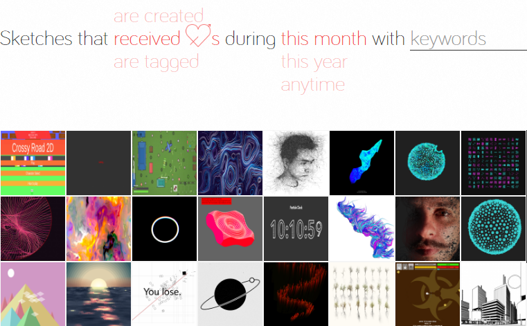
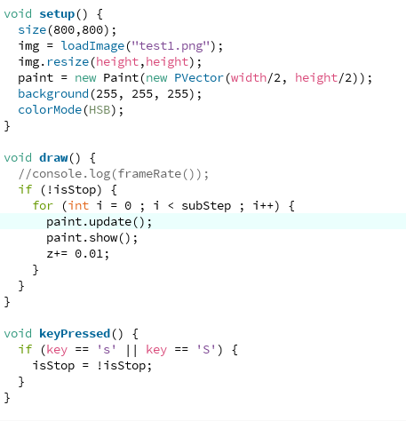

MessyCurveDraw 飞线作画的实现
MessyCurveDraw 飞线作画的实现
Processing & Visualization
By Anwhere Jin. Date issued : 12-13-2018.
点击 可以直接查看用P5呈现的效果
· 01>>> 程序结构
主代码非常简单，首先是导入图片，设置画布大小，背景等，然后开始调用主要的paint类进行绘制，通过key ‘s’ 控制是否停止和开始绘制，我没有让他加载和控制实现鼠标点击切换绘制的图片。主代码改写成java的方式相对比较容易，js的var改写成相应的数值类型，函数function改写成void就可以了。

其中最主要的实现类就是Paint类了，郑越升先生在这篇文章里详细介绍了具体的实现思想，自己可以前往看看，我简单描述一下相关的内容。
- a. Paint落笔根据【避光性】行走，我们可以取到每一笔走动前的该像素点所在固定区域对该点的力的作用加总，为其所行走的方向和大小，其‘力’为固定区域内不同像素点相对该点的方向和亮度值的引力大小，亮度越高，受力越小。
- b. 添加noise"风场"，避免画笔的轨迹在一定区域内亮度值相同轨迹为一条直线
- c. 所有画笔走过的地方增加其亮度值，避免亮度很低的区域作画频次太多。
- d. 增加“墨点”，即受力超过阈值会画一个粗的轨迹，形成墨点状
· 02>>> 问题汇总
Sen 在P5实现的时候重写了Image的get函数，我们在processing里面可以直接使用Image的get函数，也不会降低帧率
溅落墨点的实现我设置了墨点的Alpha值，不然出来的墨点都是同一个亮度，最终形成的图案看点来有点儿违和。
· 03>>> 相关连接
作品链接和相关代码的GitHub地址我分享在下方
OpenProcessing作品直达
公众号文章分享
GitHub地址

谢谢！